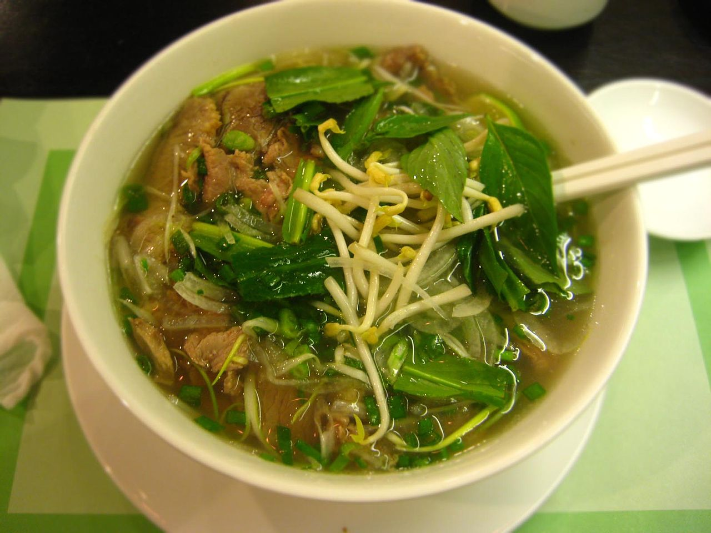
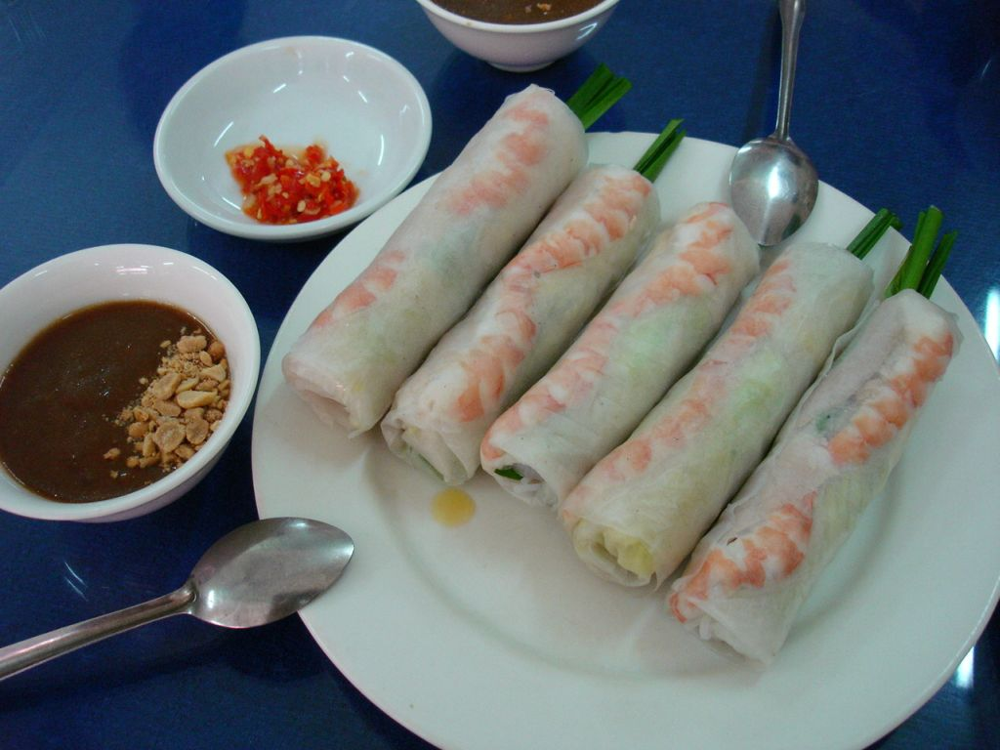
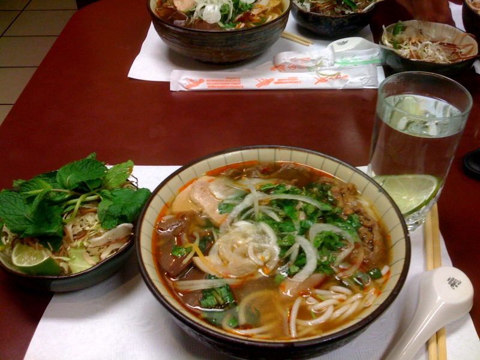
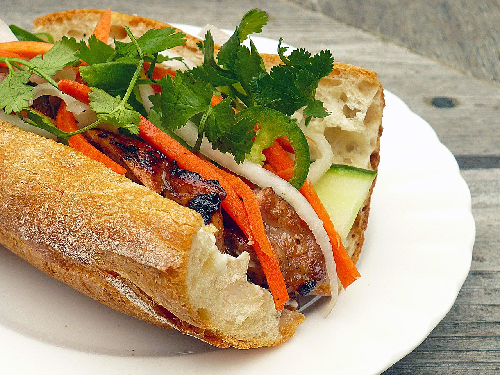

美麗浪漫的山河
中國的籓屬、法國的殖民
美國的統治時代使西貢成為東方小巴黎
越南粉的湯底主要用洋蔥和牛骨餚製，部分越南地區亦會加入冰糖調味，令湯底有淡淡甜味。而今天在海外廣泛流傳的越南河粉屬於西貢式，其特點是大量採用新鮮香料，在湯料上加入新鮮薄荷、胡荽葉、羅勒（或稱九層塔），佐以魚露、青檸汁及新鮮紅椒。除了牛腩、雞絲、肉丸外，越南粉最典型的配料其實是生牛肉，即席在客人面前以熱湯燜熟，成為該菜一大特式。


是用米皮卷上豬肉、蝦和蔬菜的一道越南涼菜。越南北方稱作「唸卷」（越南語：Nem cuốn／腩卷）。與中國的春卷非常相似，但是因為內容物為熟食，夏卷本身並不需要烹調。以水蘸汁、花生醬等佐餐。
順化牛肉粉是在越南順化流行的一種米粉做法。這道菜將酸、甜、鮮、辣，以及檸檬草的味道融合在一起。相比越南粉，順化牛肉粉更粗一些。牛腩先醃製後和牛骨湯一起燜燉，使得牛肉完全鬆化。其肉湯通常由牛骨、發酵蝦醬、香茅、乾紅辣椒製成。食用時也常一起加入薄荷葉、豆芽、檸檬、切碎的蕹菜等。血塊、豬蹄也是其很常見的配料。


越南式三明治或越南麵餅，是一種具東南亞色彩的法國麵包，雖然在國際上常被當成越南特色菜，但此食品廣泛流行於前中南半島等地區，在越南、柬埔寨、寮國均為日常食品，寮語稱為ເຂົ້າຈີ່，高棉語則稱為នំបុ័ង。製作該麵包時，除了用麵粉外，亦會加入米粉，質感相對較脆，也較傳統法國麵包為輕。